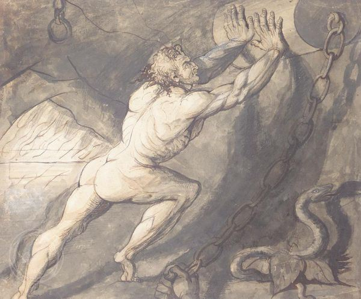

Camus connects the lack of meaning in life to suicide, by asking the question of whether suicide is a necessary action in the course of life, which is inherently meaningless. Camus believed that committing to any cause is absurd, but not committing to any cause and committing suicide is also absurd. Although he found life to be inherently meaningless, he still believed that life was worth living and that everyone has inherent dignity, and to hold on to that dignity, one has to continue to live.
The Myth of Sisyphus
There is essentially no inherent meaning in life except for what we give it or percieve it to be. There is a lack of natural meaning in the universe and by accepting that there is no meaning, we free ourselves.
Meaning Camus' definiton of the absurd could be seen with the clash of the human search for meaning or enjoyment in life and the inherent lack of meaning present in the universe. Searching for meaning in an inherently meaningless life is absurd, because you can never find meaning that is not meant to be in the first place.
Absurd